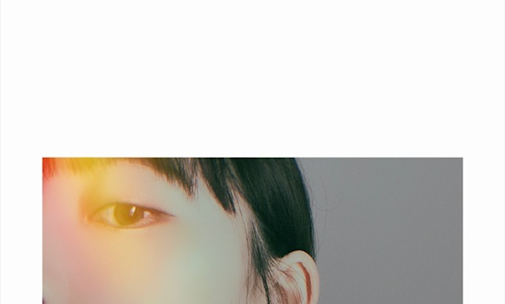

2020/0524Sunめ
今日は目の写真をたくさん載せます
アーモンドアイといいますか、
目が印象的だとよく言われるので
チャームポイントの1つでもあります


写真集発売まであと3日です ひ〜
Instagramの投稿は乃木坂に詳しくない
女性にも楽しんでもらえるように
工夫してきました☺︎
THE写真集アカウントはTwitterにあるので
違いを出したくて...
発売までもうすぐですが
インスタやTwitterはみなさん
楽しんでいただけましたか？
今日も明日もたくさん投稿します！ね！

猫目なのかな
チワワっぽい目ともいわれるし
（´-`）
赤ちゃんライオン飼いたい
（´-`）
質問また募集してるので
お送りください！
では
2020/05/24 14:42
コメント(419)
みおな〜 ブログ更新ありがとう
写真集 待ち遠しいよ〜
写真集 待ち遠しいよ〜
いつもブログありがとう！
今日はshowroomありがとう！！
未央奈ちゃんだけをずっと見れたこと、幸せでした
showroomで2期生と旅行したいと言っていて、3期生ではれんたんと仲良くて、1期ではまなったん、いくちゃんと仲良くてなどなど、他のメンバーとの交流聞けて嬉しかったです！
4期生で1人選ぶとしたら誰と旅行したいですか？
未央奈ちゃん大好き
今日はshowroomありがとう！！
未央奈ちゃんだけをずっと見れたこと、幸せでした
showroomで2期生と旅行したいと言っていて、3期生ではれんたんと仲良くて、1期ではまなったん、いくちゃんと仲良くてなどなど、他のメンバーとの交流聞けて嬉しかったです！
4期生で1人選ぶとしたら誰と旅行したいですか？
未央奈ちゃん大好き
更新ありがとう
未央奈みたいにポジティブでいるコツは？
未央奈みたいにポジティブでいるコツは？
未央奈～ こんにちは
連日のブログ更新、ありがとうございます。
「目の特集」ということでしたが、昨日の「オンライン記者会見」のときの、目に指をあて、大きく見開いていた姿が鮮明に焼き付いています。
そして、今夜の「のぎたび特集ＳＨＯＷＲＯＯＭ」こちらでは、カメラに向かって話しかけている未央奈を、自分を見つめてくれていると勝手に勘違いしながら、ドキドキしていた私がいました。
ＳＨＯＷＲＯＯＭ配信、おつかれさまでした。三角定規、面白かったです。「私泳げないんです」と言いながら、「背泳ぎができる」という言葉には吹き出してしまいました。それ「泳げてる」じゃん。きいちゃんとの仲の良さ、目に浮かんできました。次の旅、真夏・生ちゃん・絢音・れんたん・かなりん‥‥‥、だれといっても面白そうですね。
シャチといえば、名古屋港水族館にいたと思いますが、行ったことあります？ 大きくても「かわいい」、それがシャチですね。
連日のブログ更新、ありがとうございます。
「目の特集」ということでしたが、昨日の「オンライン記者会見」のときの、目に指をあて、大きく見開いていた姿が鮮明に焼き付いています。
そして、今夜の「のぎたび特集ＳＨＯＷＲＯＯＭ」こちらでは、カメラに向かって話しかけている未央奈を、自分を見つめてくれていると勝手に勘違いしながら、ドキドキしていた私がいました。
ＳＨＯＷＲＯＯＭ配信、おつかれさまでした。三角定規、面白かったです。「私泳げないんです」と言いながら、「背泳ぎができる」という言葉には吹き出してしまいました。それ「泳げてる」じゃん。きいちゃんとの仲の良さ、目に浮かんできました。次の旅、真夏・生ちゃん・絢音・れんたん・かなりん‥‥‥、だれといっても面白そうですね。
シャチといえば、名古屋港水族館にいたと思いますが、行ったことあります？ 大きくても「かわいい」、それがシャチですね。
未央奈ブログコメント39回目のかずきです！
ホントに未央奈のチャームポイントは目だよね！！
めっちゃでかくて可愛い！！
写真集発売まであと3日✨
めちゃくちゃ楽しみ！！
今日のSHOWROOM配信も可愛かったよ！
全部見ました！
のぎたび買ってたので一緒に照らし合わせながら見たよ！
じゃ、おやすみー！
体に気をつけてねー！
無理しないでね！
ばいばーいい！
ホントに未央奈のチャームポイントは目だよね！！
めっちゃでかくて可愛い！！
写真集発売まであと3日✨
めちゃくちゃ楽しみ！！
今日のSHOWROOM配信も可愛かったよ！
全部見ました！
のぎたび買ってたので一緒に照らし合わせながら見たよ！
じゃ、おやすみー！
体に気をつけてねー！
無理しないでね！
ばいばーいい！
ブログ更新ありがとうございます！
写真集どの表紙にするかずっと迷っててやっと注文しました！届くのが楽しみです！
未央奈ちゃんがもってるネイルポリッシュどのくらいありますかー？？あとお気に入りのあったら教えて欲しいです！
写真集どの表紙にするかずっと迷っててやっと注文しました！届くのが楽しみです！
未央奈ちゃんがもってるネイルポリッシュどのくらいありますかー？？あとお気に入りのあったら教えて欲しいです！
未央奈ちゃん！ブログ更新ありがとうございます！
質問です！未央奈ちゃんの名前の由来ってなんですか？？？
質問です！未央奈ちゃんの名前の由来ってなんですか？？？
みおな
こんばんは
続けてコメントします
さっきはshowroom配信見ました
のぎたびブックはまだ買ってないので、買おうと思います
三角じょう…じゃなくてエッフェル塔の絵もよかったです
いつか2期生でパリに行けるといいですね
気づけば2期生も8人になって1期生よりも少なくなってしまったので、寂しいものです
かけがえのない仲間を大切にして下さい
アイドルが人気をキープする秘訣は仲がいい事だと思っています（最終的に何を考えてるか言葉にしなくても分かれば最強だと思う）
発売日まで後3日楽しみにしてます
みおなの近況を知る事が、最近では生活の一コマになりつつあるので、毎日ありがとう！
質問
新しいゲームは何にするか決まりましたか？（メタルギアおすすめ）
またコメントします
ありがとうございました
こんばんは
続けてコメントします
さっきはshowroom配信見ました
のぎたびブックはまだ買ってないので、買おうと思います
三角じょう…じゃなくてエッフェル塔の絵もよかったです
いつか2期生でパリに行けるといいですね
気づけば2期生も8人になって1期生よりも少なくなってしまったので、寂しいものです
かけがえのない仲間を大切にして下さい
アイドルが人気をキープする秘訣は仲がいい事だと思っています（最終的に何を考えてるか言葉にしなくても分かれば最強だと思う）
発売日まで後3日楽しみにしてます
みおなの近況を知る事が、最近では生活の一コマになりつつあるので、毎日ありがとう！
質問
新しいゲームは何にするか決まりましたか？（メタルギアおすすめ）
またコメントします
ありがとうございました
未央奈ちゃんこんばんは！
今日もかわいいすぎるよ〜
私は今年、高校生になりました
それでおしゃれに興味を持ちはじめたのですが、
どうやったら未央奈ちゃんみたいにかわいくなれますか？？
憧れです！ずーっと大好き！！！
今日もかわいいすぎるよ〜
私は今年、高校生になりました
それでおしゃれに興味を持ちはじめたのですが、
どうやったら未央奈ちゃんみたいにかわいくなれますか？？
憧れです！ずーっと大好き！！！
ブログ更新ありがとう質問
写真集お気に入りポイントは？
(好きだよ
∧,,,,∧
(* ･ω･)
/ つ(⌒⌒)
しー ＼／ 好き❤
)
写真集お気に入りポイントは？
(好きだよ
∧,,,,∧
(* ･ω･)
/ つ(⌒⌒)
しー ＼／ 好き❤
)
未央奈ちゃんへ
こんばんは、未央奈ちゃん。
コロナも落ち着いてきて、本当に良かったね！
まだまだ油断は全然出来ないけど、未央奈ちゃんも私も感染しなくて本当に良かった！
未央奈ちゃんの事は『全部大好き』だけど、勿論『目』も可愛くて大好き！可愛い～！(照)
写真集の発売、もうすぐだ～！ ひ～ 笑笑
私も本当に嬉しいし、楽しみ～！
そうだ、そうだ、私が多分ドラマの中で１番大好きで、未央奈ちゃんに是非是非観て頂けたら嬉しいオススメのドラマがあって、明日から特別編として再放送される『中学聖日記』っていう『儚くも美しい純愛ラブストーリー』が凄く感動して、泣いたし、面白かったし、『もう全てが詰まったようなドラマ』だから、もし良かったら是非是非観てみてね！私は初めての放送の時から全話をもう録画して録っているのに、再放送が凄く嬉し過ぎて、また全話を録画するんだ～！笑笑
質問受け付けてくれるの？嬉しい～！笑笑
じゃあ折角のチャンスだし、私も何か未央奈ちゃんに質問させて頂きたいなあ。
う～ん、そうだなあ‥。未央奈ちゃんに聞きたい事はもう数え切れない位沢山あるけれど‥。
えっとね、じゃあ私の事で、『何もかもが未経験で、特技も何も出来る事をほとんど何も持ってない、そして外見も内面も特に冴えない私でも、自信を持つにはどうしたら良いですか？』
私は『ホットギミック』を観れていないんだけど、多分、未央奈ちゃんが演じてくれた『自信が持てない初ちゃんみたいな女の子』で‥。
未央奈ちゃんみたいな女の子になりたくて、ずっと、ずっと応援しながら、憧れててね。
今日、コンビニで未央奈ちゃんの雑誌を探したけど、見つけられなかった。ごめんね。
『緋色だったり、とても綺麗な瞳』だと思うよ！私、人とか皆の良い所を探して褒めるのが大好きなの！(照)
『YOU are beautiful lady！』
『世界で１番美しい女の子へ』
未央奈ちゃんの事、ずっとずっと大好き～
こんばんは、未央奈ちゃん。
コロナも落ち着いてきて、本当に良かったね！
まだまだ油断は全然出来ないけど、未央奈ちゃんも私も感染しなくて本当に良かった！
未央奈ちゃんの事は『全部大好き』だけど、勿論『目』も可愛くて大好き！可愛い～！(照)
写真集の発売、もうすぐだ～！ ひ～ 笑笑
私も本当に嬉しいし、楽しみ～！
そうだ、そうだ、私が多分ドラマの中で１番大好きで、未央奈ちゃんに是非是非観て頂けたら嬉しいオススメのドラマがあって、明日から特別編として再放送される『中学聖日記』っていう『儚くも美しい純愛ラブストーリー』が凄く感動して、泣いたし、面白かったし、『もう全てが詰まったようなドラマ』だから、もし良かったら是非是非観てみてね！私は初めての放送の時から全話をもう録画して録っているのに、再放送が凄く嬉し過ぎて、また全話を録画するんだ～！笑笑
質問受け付けてくれるの？嬉しい～！笑笑
じゃあ折角のチャンスだし、私も何か未央奈ちゃんに質問させて頂きたいなあ。
う～ん、そうだなあ‥。未央奈ちゃんに聞きたい事はもう数え切れない位沢山あるけれど‥。
えっとね、じゃあ私の事で、『何もかもが未経験で、特技も何も出来る事をほとんど何も持ってない、そして外見も内面も特に冴えない私でも、自信を持つにはどうしたら良いですか？』
私は『ホットギミック』を観れていないんだけど、多分、未央奈ちゃんが演じてくれた『自信が持てない初ちゃんみたいな女の子』で‥。
未央奈ちゃんみたいな女の子になりたくて、ずっと、ずっと応援しながら、憧れててね。
今日、コンビニで未央奈ちゃんの雑誌を探したけど、見つけられなかった。ごめんね。
『緋色だったり、とても綺麗な瞳』だと思うよ！私、人とか皆の良い所を探して褒めるのが大好きなの！(照)
『YOU are beautiful lady！』
『世界で１番美しい女の子へ』
未央奈ちゃんの事、ずっとずっと大好き～
自粛期間中なにして過ごしてましたか？
うわーん、かわいい！目が大きくなりたいです
未央奈ちゃん、今日(5/24)のショールーム見たよ！
それとツイッターもインスタも見た！
未央奈ちゃんが描いたエッフェル塔の絵とか
北野ヒナ子ちゃんとのニューカレドニアでの
2人旅でのお話しがとても面白かったよ
ツイッターでは岸辺で風に吹かれてる姿がとても
綺麗だった
インスタライブの方も楽しみにしてるね！
質問は「バイオハザード7は全てのストリートを
クリアしたの？」と「良くご飯を食べに行くメンバーは？」、「お酒は強い方ですか？」いずれかの
質問で構わないので、御答えしてくれたら有り難いな！
今日はショールーム配信有り難う！
初めての参加だったけど、とても楽しめた
それとツイッターもインスタも見た！
未央奈ちゃんが描いたエッフェル塔の絵とか
北野ヒナ子ちゃんとのニューカレドニアでの
2人旅でのお話しがとても面白かったよ
ツイッターでは岸辺で風に吹かれてる姿がとても
綺麗だった
インスタライブの方も楽しみにしてるね！
質問は「バイオハザード7は全てのストリートを
クリアしたの？」と「良くご飯を食べに行くメンバーは？」、「お酒は強い方ですか？」いずれかの
質問で構わないので、御答えしてくれたら有り難いな！
今日はショールーム配信有り難う！
初めての参加だったけど、とても楽しめた
ポンデライオンなら許されるはず
質問
嫌いな食べ物って何ですか？
嫌いな食べ物って何ですか？
今週ANN聴きました～
2人で話すトークは軽快で、まるで姉妹でした。
2期生同士ということも相まってると思うけど、
未央奈が心掛けてる、誰かと仲良くなる秘訣とかあったら教えて？？
2人で話すトークは軽快で、まるで姉妹でした。
2期生同士ということも相まってると思うけど、
未央奈が心掛けてる、誰かと仲良くなる秘訣とかあったら教えて？？
未央奈ちゃん 更新してくれてありがとうございます
未央奈ちゃんは髪の毛のケア何を使ってますか??私が美容師をしてるので気になりました✨未央奈ちゃん髪の毛とっても綺麗です✨ あとは、写真集で1番お気に入りのカットはどれですか？？やっぱりドレスのかな？ あれとっても好き(*^^*) あとは、夏服何か買ったものとか気になってるアイテムとか形とかあれば教えてほしいです✨
またインスタのほうにもコメントするね
そういえば未央奈ちゃんがオススメしてたニベアのホワイトニングボディークリームを真似して買って、とってもよかったのでリピートしました
今日も可愛い未央奈ちゃんが憧れです！
未央奈ちゃんは髪の毛のケア何を使ってますか??私が美容師をしてるので気になりました✨未央奈ちゃん髪の毛とっても綺麗です✨ あとは、写真集で1番お気に入りのカットはどれですか？？やっぱりドレスのかな？ あれとっても好き(*^^*) あとは、夏服何か買ったものとか気になってるアイテムとか形とかあれば教えてほしいです✨
またインスタのほうにもコメントするね
そういえば未央奈ちゃんがオススメしてたニベアのホワイトニングボディークリームを真似して買って、とってもよかったのでリピートしました
今日も可愛い未央奈ちゃんが憧れです！
ブログありがとう！
素敵な目ですね(о´∀`о)
質問です！
毎日欠かさずやってることはありますか？
素敵な目ですね(о´∀`о)
質問です！
毎日欠かさずやってることはありますか？
お！め！
みおちゃんのチャームポイントの1つ〜
アーモンドアイかぁ。なんかおいしそう。笑
みおちゃんのこういうちょっと光が入る写真も好き〜かわいいおめめですね！笑
ヒューヒュー
あと3日！！！
InstagramもTwitterもみおちゃんのことばっかり載ってるから毎日しあわせだったよ〜
ありがとー！楽しみにしてる！ね！
かわいい目してるよん☺︎
急な赤ちゃんライオン！笑
シンバかな。
まったりする顔文字だね。(｡-_-｡)
質問！ででんっ！
お姫様になれたらまずどんなことをしてみたいー？
夜の学校とかにわくわくするタイプ？それともウキウキするタイプ？笑
あ！そんな彼なら捨てちゃえば？観たよー！
前にみおちゃん言ってたけど、ほんとにいろんなタイプの人が出てきた。笑
君は僕の例外だ っていうシーンはそこだったんだね！いいシーン☺️
結婚指輪のあのサプライズ？をみおちゃんがどう思ったのか気になったわ。こっちは結婚したことにおめでとう。って感じで感動して涙が出てた。笑
さてさて、今日の乃木中もわくわく。
ではでは！
みおちゃんのチャームポイントの1つ〜
アーモンドアイかぁ。なんかおいしそう。笑
みおちゃんのこういうちょっと光が入る写真も好き〜かわいいおめめですね！笑
ヒューヒュー
あと3日！！！
InstagramもTwitterもみおちゃんのことばっかり載ってるから毎日しあわせだったよ〜
ありがとー！楽しみにしてる！ね！
かわいい目してるよん☺︎
急な赤ちゃんライオン！笑
シンバかな。
まったりする顔文字だね。(｡-_-｡)
質問！ででんっ！
お姫様になれたらまずどんなことをしてみたいー？
夜の学校とかにわくわくするタイプ？それともウキウキするタイプ？笑
あ！そんな彼なら捨てちゃえば？観たよー！
前にみおちゃん言ってたけど、ほんとにいろんなタイプの人が出てきた。笑
君は僕の例外だ っていうシーンはそこだったんだね！いいシーン☺️
結婚指輪のあのサプライズ？をみおちゃんがどう思ったのか気になったわ。こっちは結婚したことにおめでとう。って感じで感動して涙が出てた。笑
さてさて、今日の乃木中もわくわく。
ではでは！
未央奈ちゃんこんばんは!今晩ののぎたびのSHOWROOM見たよ!久しぶりのSHOWROOM嬉しい めちゃくちゃ可愛かったよ!おやすみおな!
堀ちゃんブログ更新ありがとう！！
毎日、インスタの投稿で楽しませてもらってます。
〜質問〜
・買い物などに行く時にはどんな格好で行きますか？
・今までで一番印象に残っていることは？(ライブなど)
・岐阜のおすすめスポット
毎日、インスタの投稿で楽しませてもらってます。
〜質問〜
・買い物などに行く時にはどんな格好で行きますか？
・今までで一番印象に残っていることは？(ライブなど)
・岐阜のおすすめスポット
堀さん今日もお綺麗です！
今日、SHOWROOMのライブ見れなかった！どんまい！
乃木坂46時間TVのポーズもそうだったけど最近、目が好きなん？笑 俺は未央奈の黄金比のように整ったな顔好きだよ笑笑
さて、ここで質問です。ででん！
乃木坂入って7年たちましたが、今までで自分史上最高の写真はなんですか？
今まで言われたあだ名で嫌だったのはなんですか？
これはリクエストなんですが、未央奈の手作り料理がみたい ♂️
今日、SHOWROOMのライブ見れなかった！どんまい！
乃木坂46時間TVのポーズもそうだったけど最近、目が好きなん？笑 俺は未央奈の黄金比のように整ったな顔好きだよ笑笑
さて、ここで質問です。ででん！
乃木坂入って7年たちましたが、今までで自分史上最高の写真はなんですか？
今まで言われたあだ名で嫌だったのはなんですか？
これはリクエストなんですが、未央奈の手作り料理がみたい ♂️
2枚目の写真二度見したわ
女優かと思ったと言うか、なんというか
写真集にありそう
女優かと思ったと言うか、なんというか
写真集にありそう
猫もチワワもわかる
め・・ メ・・ 目・・ ＥＹＥＳ（笑）
未央奈の目・・ クリックリの大きい目、大きい瞳
綺麗に澄んだ白、綺麗な栗色の瞳
唯一無二の可愛い目、可愛い瞳
笑う程に垂れる可愛く優しい目
だけど・・・
じっと見つめられると竦みそうになる
程に美しく真実を見通しそうな力強さを
感じる
君のその目で見つめられるときっと
誰もが噓が付けないなって思える程
アーモンドアイ？ 猫目？、チワワの目？
どれもこれも当て嵌まっている様な、無い様な・・・
ううん、自分には未央奈の目は何にも例えられない
素敵な未央奈だけの目・・・
その瞳に魅せられて、一瞬で目をくぎ付けにされ、
君のファンになりました。
「バレッタ」のＰＶでの君の目に一目惚れしてしまったん
です。 強烈なインパクトでした。 誰？？この美少女？
乃木坂を本気で追い始めたのは、未央奈・・貴方を見つ
けたからです。（笑）
・・・初期メンバーは誰もが可愛く素敵です・・・
けど一際際立って自分の目に飛び込んで来た
のは貴女の姿、その目だと思っています。
写真集が届くのを今か今かと、待ち遠しくてなりません。
もぉ～幾つ寝ると、お正月～・・・ならぬ写真集～！
寒い、寒いですか？
じゃぁ～、なぁ～
あっ、赤ちゃんライオン飼いたい気持ち凄くワカる！（笑）
未央奈の目・・ クリックリの大きい目、大きい瞳
綺麗に澄んだ白、綺麗な栗色の瞳
唯一無二の可愛い目、可愛い瞳
笑う程に垂れる可愛く優しい目
だけど・・・
じっと見つめられると竦みそうになる
程に美しく真実を見通しそうな力強さを
感じる
君のその目で見つめられるときっと
誰もが噓が付けないなって思える程
アーモンドアイ？ 猫目？、チワワの目？
どれもこれも当て嵌まっている様な、無い様な・・・
ううん、自分には未央奈の目は何にも例えられない
素敵な未央奈だけの目・・・
その瞳に魅せられて、一瞬で目をくぎ付けにされ、
君のファンになりました。
「バレッタ」のＰＶでの君の目に一目惚れしてしまったん
です。 強烈なインパクトでした。 誰？？この美少女？
乃木坂を本気で追い始めたのは、未央奈・・貴方を見つ
けたからです。（笑）
・・・初期メンバーは誰もが可愛く素敵です・・・
けど一際際立って自分の目に飛び込んで来た
のは貴女の姿、その目だと思っています。
写真集が届くのを今か今かと、待ち遠しくてなりません。
もぉ～幾つ寝ると、お正月～・・・ならぬ写真集～！
寒い、寒いですか？
じゃぁ～、なぁ～
あっ、赤ちゃんライオン飼いたい気持ち凄くワカる！（笑）
堀さん、こんばんは。
showroom見ましたよ。めちゃくちゃ可愛い動いてる堀さんが見れて嬉しかったです。いつかエッフェル塔いけたら良いですね。それにしても透き通るような肌の美しさが凄くて終始見惚れてました。
美しいといえば、アップトゥーボーイ見ましたよ。街並みの色彩が豊かで、もちろん堀さんも美しかったです。水着のページは肌の美しさに圧倒されました。無邪気な笑顔と大人っぽい表情のギャップも見事で、巨大な堀さんにエビのようにむんずと掴まれたいくらい笑顔が可愛いです。
目でいうと、寝そべってる見透かすような目と、夕陽に気だるく片目を隠してる目と、不思議そうに取っ手？を見つめる目が好きです。
ちなみに僕は堀さんの目は猫目だと思います。猫っぽくあって欲しいという願望も少しあります。
赤ちゃんライオンは頭身低くてかわいいですよね。いつかオランウータンに掲げさせてライオンキングごっこもしたいですね。
各種SNSをいつも更新してくれてありがとうございます。発売まで頑張ってくださいね。
showroom見ましたよ。めちゃくちゃ可愛い動いてる堀さんが見れて嬉しかったです。いつかエッフェル塔いけたら良いですね。それにしても透き通るような肌の美しさが凄くて終始見惚れてました。
美しいといえば、アップトゥーボーイ見ましたよ。街並みの色彩が豊かで、もちろん堀さんも美しかったです。水着のページは肌の美しさに圧倒されました。無邪気な笑顔と大人っぽい表情のギャップも見事で、巨大な堀さんにエビのようにむんずと掴まれたいくらい笑顔が可愛いです。
目でいうと、寝そべってる見透かすような目と、夕陽に気だるく片目を隠してる目と、不思議そうに取っ手？を見つめる目が好きです。
ちなみに僕は堀さんの目は猫目だと思います。猫っぽくあって欲しいという願望も少しあります。
赤ちゃんライオンは頭身低くてかわいいですよね。いつかオランウータンに掲げさせてライオンキングごっこもしたいですね。
各種SNSをいつも更新してくれてありがとうございます。発売まで頑張ってくださいね。
あと２日ですね☆
しつもん：
ご自身がお写真を撮られるときに
気を付けていること等、ございましたか？
しつもん：
ご自身がお写真を撮られるときに
気を付けていること等、ございましたか？
本当にとても綺麗な目ですね。
薄目もすごくいいです。
人は顔を見るとき、まず目を見るし、最高のチャームポイントだと思います。
写真集とてもとても楽しみです。
赤ちゃんライオン飼いたい、なかなかすごいですね。
質問です。
未央奈ちゃんはすぐ眠れますか？
もし眠れなかったら、何かしますか？
薄目もすごくいいです。
人は顔を見るとき、まず目を見るし、最高のチャームポイントだと思います。
写真集とてもとても楽しみです。
赤ちゃんライオン飼いたい、なかなかすごいですね。
質問です。
未央奈ちゃんはすぐ眠れますか？
もし眠れなかったら、何かしますか？
更新ありがとう〜！！
目だけでかっこいいな笑笑
目といえば、乃木坂46分記者会見で、乃木坂のポーズの時に目を超開いてたね笑
めちゃめちゃ笑ったよあれ笑
もう昨日になってるけど、Showroomの配信も見た！！
写真集が待ち遠しいな…
体調には気をつけてね。
では
目だけでかっこいいな笑笑
目といえば、乃木坂46分記者会見で、乃木坂のポーズの時に目を超開いてたね笑
めちゃめちゃ笑ったよあれ笑
もう昨日になってるけど、Showroomの配信も見た！！
写真集が待ち遠しいな…
体調には気をつけてね。
では
コロナを受け入れいる医療スタッフがどれだけ過酷な状況で働いているのか私には痛いほどわかる。
看護師は、感染性の高い患者の痰や排泄物を処理しなければらならない。診療放射線技師は毎日朝に胸部の写真を撮らなくてはならない。エクモがまわったら、臨床工学技師が24時間、交代で張り付かねばならない
医者看護師だけじゃない医療従事者
医療従事者支援ソングありがとう
看護師は、感染性の高い患者の痰や排泄物を処理しなければらならない。診療放射線技師は毎日朝に胸部の写真を撮らなくてはならない。エクモがまわったら、臨床工学技師が24時間、交代で張り付かねばならない
医者看護師だけじゃない医療従事者
医療従事者支援ソングありがとう
みおなちゃん、大好きです
未央奈ちゃん、おはよう。
聞きたい事が今出来ました。
MVがどういう経緯でいつ決まったのか
冒頭からおかしいんだよ。
OGが写ってる気がするなぁと思ったら
気のせいじゃないの。バンバン出てくる。
乃木坂の事務所の人だけでなくアナウンサー
になった人も…涙が止まらん…
未央奈ちゃんはこのサプライズの為に
起きていてくれたのかな？
ありがとう！
ありがとうしか言えない。今は簡潔な
言葉にしたくないのにそれしか出て
こないな…
乃木坂にしか出来ないサプライズ
ありがとう！
では。
聞きたい事が今出来ました。
MVがどういう経緯でいつ決まったのか
冒頭からおかしいんだよ。
OGが写ってる気がするなぁと思ったら
気のせいじゃないの。バンバン出てくる。
乃木坂の事務所の人だけでなくアナウンサー
になった人も…涙が止まらん…
未央奈ちゃんはこのサプライズの為に
起きていてくれたのかな？
ありがとう！
ありがとうしか言えない。今は簡潔な
言葉にしたくないのにそれしか出て
こないな…
乃木坂にしか出来ないサプライズ
ありがとう！
では。
未央奈、新曲ありがとう。
今起きてビックリ！
サプライズ！
今日も一日頑張るね。
ひでき
今起きてビックリ！
サプライズ！
今日も一日頑張るね。
ひでき
未央奈ちゃんおはようございます！ありがとうございます‼頑張ります‼今日から頑張ります‼頑張って下さい！今日から頑張ります‼頑張って下さい！ありがとうございます
こんにチワワ♪
目が特徴的ですよね♡
猫目にも見えますし、
チワワっぽくも見えます☆
鋭い眼差しがチャーミングですし、
真っ直ぐな視線はとても真摯です✨
写真集インスタもとても魅力的です！
女性から見ても羨望の眼差しですよ✌
動物を好きな女性は優しいですよね♡☺
目が特徴的ですよね♡
猫目にも見えますし、
チワワっぽくも見えます☆
鋭い眼差しがチャーミングですし、
真っ直ぐな視線はとても真摯です✨
写真集インスタもとても魅力的です！
女性から見ても羨望の眼差しですよ✌
動物を好きな女性は優しいですよね♡☺
未央奈ちゃん、おはようございます。
いつも情報発信ありがとう、本当に癒されます。
今日やっとアップトゥボーイ手に入ります。可愛い未央奈ちゃんを見たら、感想をコメントしますね。
OG 達と新曲出したんだね、今朝のめざましテレビで見ました。仕事から帰ったら、ゆっくり聴きます。
兎に角、良い体調で過ごしてくださいね。あ～写真集が待ち遠しい‼
乃木坂46と頑張ってるcuteでsmartな未央奈ちゃんを応援しています。
いつも情報発信ありがとう、本当に癒されます。
今日やっとアップトゥボーイ手に入ります。可愛い未央奈ちゃんを見たら、感想をコメントしますね。
OG 達と新曲出したんだね、今朝のめざましテレビで見ました。仕事から帰ったら、ゆっくり聴きます。
兎に角、良い体調で過ごしてくださいね。あ～写真集が待ち遠しい‼
乃木坂46と頑張ってるcuteでsmartな未央奈ちゃんを応援しています。
未央奈～～～～～～～～～。
おはようございます。
質問です。未央奈は動物に生まれ変わるとしたら、何になりたいですか？理由も併せてお願いしゃーす。又、更新してくださいな。
おはようございます。
質問です。未央奈は動物に生まれ変わるとしたら、何になりたいですか？理由も併せてお願いしゃーす。又、更新してくださいな。
普段、朝起きた時になるべくやるように心がけている事はなんですか？
タイトルを見て『め組』の人と思いました。
ラッツ＆スター でご検索ください。
未央奈ちゃんは、ぱっちりした目と考えると、チワワ系であるし、猫目(ФωФ)な感じもするし、、
アップトゥボーイのオフショット、帽子被ってて、焦げ茶系のコーデも、よく似合っててかわいいよ！(≧∇≦)b
本誌購入は、近日中に。
サプライズ公開された新曲については、未央奈ちゃんが次のブログで触れそうなので、あえて割愛させていただきます
〇ｒｚ
バイＱ～ by はっぱ隊
ラッツ＆スター でご検索ください。
未央奈ちゃんは、ぱっちりした目と考えると、チワワ系であるし、猫目(ФωФ)な感じもするし、、
アップトゥボーイのオフショット、帽子被ってて、焦げ茶系のコーデも、よく似合っててかわいいよ！(≧∇≦)b
本誌購入は、近日中に。
サプライズ公開された新曲については、未央奈ちゃんが次のブログで触れそうなので、あえて割愛させていただきます
〇ｒｚ
バイＱ～ by はっぱ隊
未央奈ちゃん更新ありがとう！
未央奈ちゃんの目、好き。
テレビや雑誌で目が合うとドキドキしてしまいます。
ええ、ちょろい男です。笑
これからもいろんな表情の未央奈ちゃんを見せてね！
ではでは～
未央奈ちゃんの目、好き。
テレビや雑誌で目が合うとドキドキしてしまいます。
ええ、ちょろい男です。笑
これからもいろんな表情の未央奈ちゃんを見せてね！
ではでは～
ほりっぴ～、ナンチです♪
おはようさん
世界中の隣人よ
素敵なMVですね
ありがとう～
おはようさん
世界中の隣人よ
素敵なMVですね
ありがとう～
堀ちゃん！更新ありがとう！！
堀ちゃんの目、
個人的には1番好きなんです！
ぱっちりで引き込まれる
感じが大好きだよ！
もうすぐ発売だね！！
めちゃめちゃ楽しみに待ってます！
質問！
○堀ちゃんは夏の男の子の服装で
普通のTシャツか、襟付きのTシャツ
どちらが好きですか？？
もし良かったら答えて下さい！
待ってます！
次回の更新も楽しみにしてるよ！
では！
体調気をつけてね！！
堀ちゃんの目、
個人的には1番好きなんです！
ぱっちりで引き込まれる
感じが大好きだよ！
もうすぐ発売だね！！
めちゃめちゃ楽しみに待ってます！
質問！
○堀ちゃんは夏の男の子の服装で
普通のTシャツか、襟付きのTシャツ
どちらが好きですか？？
もし良かったら答えて下さい！
待ってます！
次回の更新も楽しみにしてるよ！
では！
体調気をつけてね！！
ブログ更新ありがとうございます。写真集を良いイメージで撮る方法で難しかったことありますか？あれば教えていただきたいです。最後はダジャレで、その意見についていけん
◎おすすめ小説はありますか?
◎未央奈の全身コーデみたいです!!
以上ですm(_ _)m
◎未央奈の全身コーデみたいです!!
以上ですm(_ _)m
未央奈ちゃんブログ更新ありがとう
インスタライブ見たよー
写真集発売まであと数日ですね、、楽しみです
未央奈ちゃん本当目がパッチリしてて可愛いよね
握手会でもいつもそう思ってましたよ
アーモンドアイって素敵ですね
愛犬さんにも似てるなぁって思ってました
スラっとしてて目がパッチリなのでチワックスぽいなぁと
「世界中の隣人よ」のPV見たよー
朝から泣きそうです
ブログや写真集のPRやモバメや755で頻繁に活動してくれてありがとう いつも元気をもらってます
インスタライブ見たよー
写真集発売まであと数日ですね、、楽しみです
未央奈ちゃん本当目がパッチリしてて可愛いよね
握手会でもいつもそう思ってましたよ
アーモンドアイ
愛犬さんにも似てるなぁって思ってました
スラっとしてて目がパッチリなのでチワックスぽいなぁと
「世界中の隣人よ」のPV見たよー
朝から泣きそうです
ブログや写真集のPRやモバメや755で頻繁に活動してくれてありがとう
いいなー！目がチャームポイントは純粋に羨ましい！！
未央奈～
今朝新曲のMV観たよぉいい曲だよねぇ緊急事態宣言解除されてもまだウィルスが完全に消えた訳では無い中で、それぞれがこれからの生き方を考えないといけませんね。今、僕の会社も経営が傾いて将来が見えない大変な時期で気持ちが落ち込んでいましたが、このMVを観て曲を聞いて元気をもらいました。もう少し踏ん張ってみます！
未央奈に質問というか……モバメでもブログでもいいので、今大変な時期を過ごしている未央奈ファンの人達に応援メッセージを下さい。お願いします！
未央奈大好きやで
今朝新曲のMV観たよぉ
未央奈に質問というか……モバメでもブログでもいいので、今大変な時期を過ごしている未央奈ファンの人達に応援メッセージを下さい。お願いします！
未央奈大好きやで
アーモンドアイな目カッコいいですね。
日向坂46の富田鈴花さんが、未央奈の影響を受けて自分は自分らしくあればいいんだ、と感銘を受けたそうですね。
未央奈の言葉で、尊敬する先輩を作るとそっちの方向にしか行かないっていうのを受けてだそうで。
勿論尊敬する人は沢山いるんだろうけど、自分が目指すところはやっぱり自分で決めて進んでいくしかないですよね。
僕も自分らしさを大事にしていこうと思っています！
日向坂46の富田鈴花さんが、未央奈の影響を受けて自分は自分らしくあればいいんだ、と感銘を受けたそうですね。
未央奈の言葉で、尊敬する先輩を作るとそっちの方向にしか行かないっていうのを受けてだそうで。
勿論尊敬する人は沢山いるんだろうけど、自分が目指すところはやっぱり自分で決めて進んでいくしかないですよね。
僕も自分らしさを大事にしていこうと思っています！


ではまた